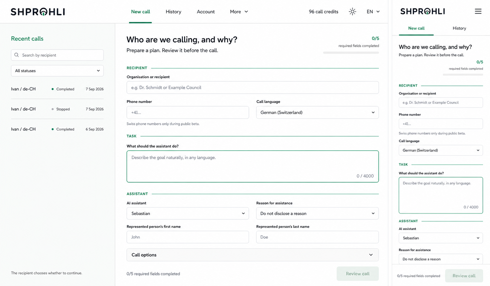
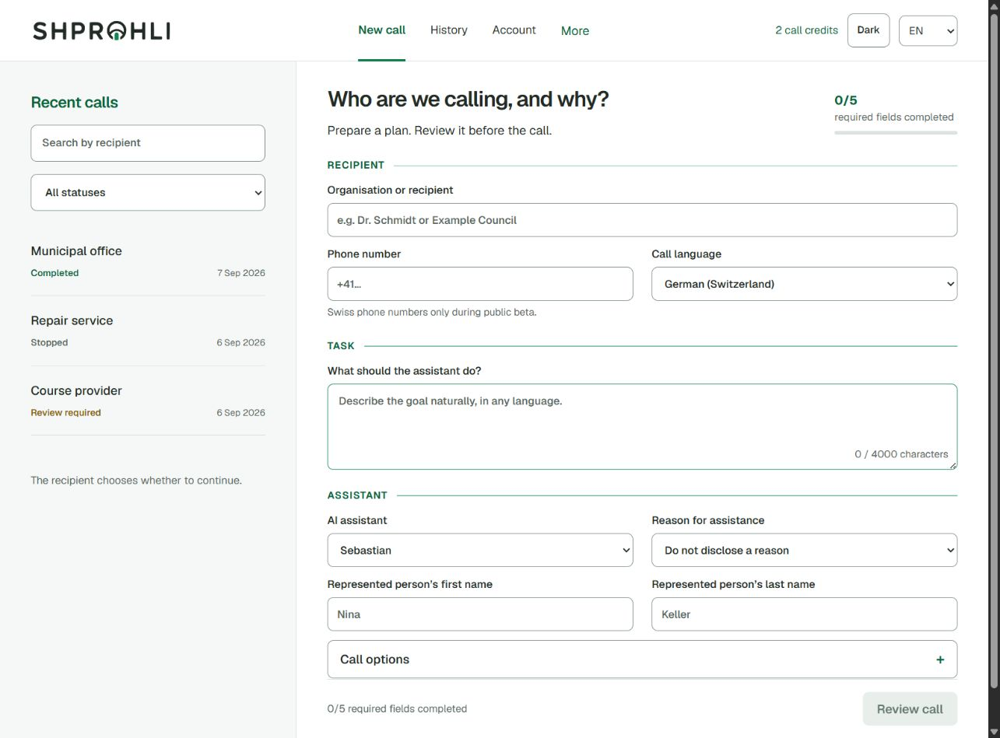
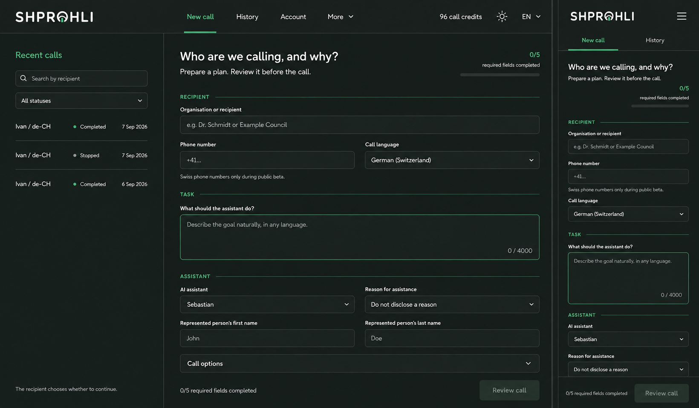
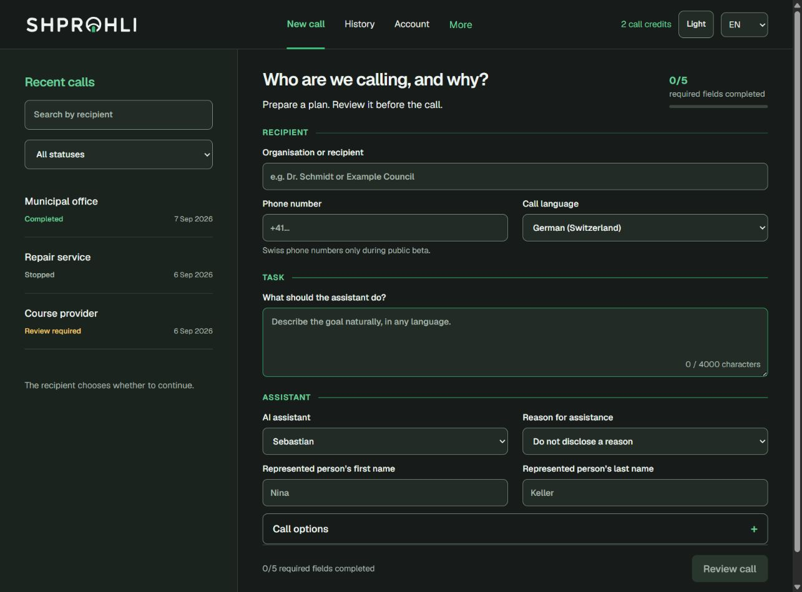

Сравнение композиции. Из исходной доски показана desktop-область ~1300×959; макет снят при 1300×960 CSS px. Browser PNG 1285×949 нормализован до области сравнения. Это не попиксельная метрика.



